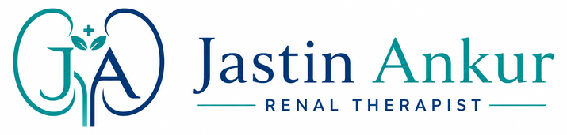

Renal Care Foundation
Kidney anatomy, CKD basics, common reports, BP/sugar impact, symptoms awareness aur nephrology workflow.

Call NowJastin Ankur | Renal Therapist
Dialysis support, kidney disease education, diet coordination, fluid management aur family counselling ke liye professional guidance.
About Care
Kidney disease, dialysis routine, diet restrictions aur medicines ko manage karna emotionally bhi tough ho sakta hai. Yahan focus hai clear education, daily routine planning, symptom awareness, aur doctor ke treatment plan ko follow karne mein support.
Course
Paramedical, nursing, allied health aur MBBS students ke liye renal care, dialysis support aur kidney patient counselling ka practical course.
Kidney anatomy, CKD basics, common reports, BP/sugar impact, symptoms awareness aur nephrology workflow.
Hemodialysis basics, dialysis day checklist, patient preparation, machine-area hygiene aur post-session observation.
Renal patient education, counselling skills, fluid monitoring, follow-up planning aur family support training.
Vitals charting, dialysis notes, intake-output tracking, red-flag reporting aur doctor-team communication.
Salt, potassium, phosphorus, protein aur fluid restriction ko patient-friendly language mein explain karna.
AV fistula/catheter care awareness, hand hygiene, dialysis unit safety aur complication signs ki basic training.
Duration, fees, certificate, practical class aur specialization batch details ke liye contact karein.
Course Details PuchheinNote: Course education and skill guidance ke liye hai. Degree, license ya university accreditation details aapke institute/clinic policy ke according add ki ja sakti hain.
Departments
Students aur patients ke liye renal care se related important departments.
Ankur
Dr. Abhishek aur Chandan
Dr. Ibrahim
Dr. Priya
Anita
Services
Dialysis schedule, access care, session ke pehle aur baad ki precautions, aur common discomforts par guidance.
CKD stages, reports samajhna, warning signs, aur follow-up routine ko simple language mein explain karna.
Doctor/dietitian advice ke according salt, potassium, phosphorus, protein aur fluid intake ko track karne mein help.
Family members ko daily care, hygiene, medication reminders, emergency signs aur lifestyle support ke liye train karna.
Care Plan
Patient ki reports, symptoms, dialysis history aur current treatment plan ko samjha jata hai.
Diet, fluids, medicines, activity, dialysis days aur family support ke hisaab se care routine banaya jata hai.
Progress review, doubts clear karna, aur red-flag symptoms par timely medical consultation ki guidance.
Important
Yeh service doctor ke diagnosis ya emergency treatment ka replacement nahi hai. Chest pain, severe breathlessness, very low urine, fainting, heavy swelling, high fever, ya severe weakness ho to turant nearest emergency care ya apne nephrologist se contact karein.
FAQ
Renal therapist patient aur family ko kidney care routine, dialysis preparation, diet-fluid tracking, hygiene, aur symptoms awareness mein guide karta hai.
Haan, basic counselling aur report discussion online ho sakta hai. Physical assessment ya urgent symptoms ke liye clinic/hospital visit zaroori ho sakta hai.
Recent kidney function tests, prescription, dialysis summary, BP/sugar records, aur current medicines ki list useful hoti hai.
Contact
Apna naam, patient ki age, kidney condition, dialysis status aur preferred time share karein. Response usually working hours mein diya jayega.